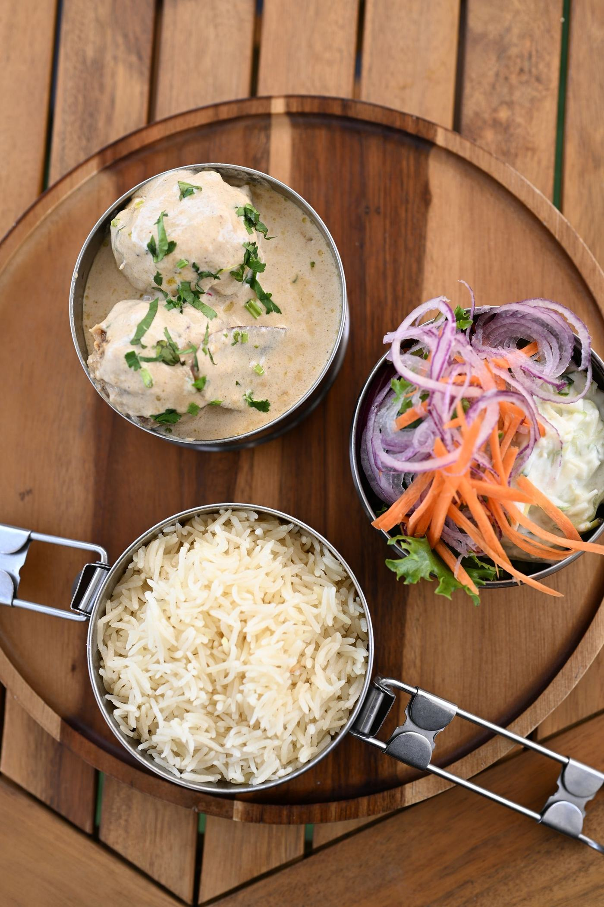

Lunch
Dabbas & Indi Bowls
City-based Dabbas and half-hot, half-cold Indi Bowls built for the working day: complete, balanced Indian food without the heavy-afternoon feeling. The lunch offer also drives takeaway and delivery.
See the lunch menu